v42 表の列の幅を自分で決める（必要なときだけ）
希望：列の幅は、いま「そろえる」「中身に合わせる」の2つ。どちらでも合わないときだけ、学生が列の幅を自分で変えられるように。
そこで、3つ目の「自分で決める」を足します。そろえる・中身に合わせるの表は、いまのまま（つまみもボタンも出ません）。
画面は本物のツールに、案の部分だけ書き足して写したものです（絵を押すと大きく見られます）。見本の素材表に、説明の列「特徴」を足しています。「左端の列」「行の高さ」は、別に作っている途中のものです。
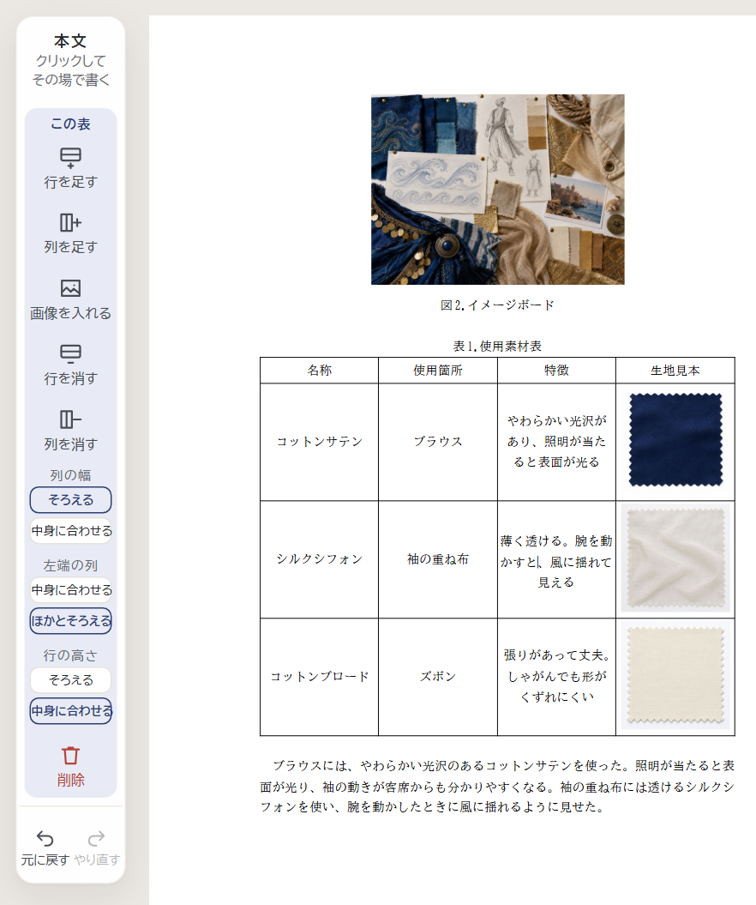
パソコン：左の道具で2つから選ぶ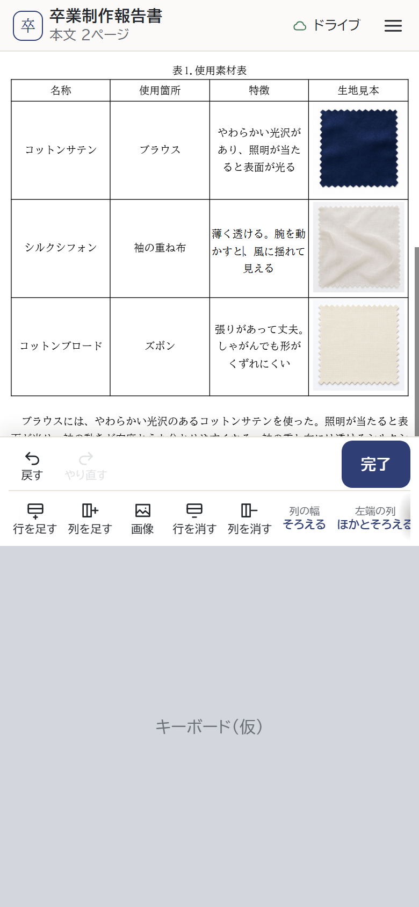
スマホ：押すたびに切り替え「そろえる」は、どの列も同じ幅。説明の長い列は、行が増えて表が縦に長くなります。
「中身に合わせる」は、字の多い列が広くなりますが、短い列が狭くなりすぎることがあります（④の真ん中の絵）。
- 列の幅に 自分で決める を足します。つまみやボタンが出るのは、自分で決めるの表を書いている間だけ。
- 幅は 5% ずつ変わります。どの列も 10%（3字ほど）より狭くなりません。合計は、いつも本文の幅いっぱい。
- 自分で決めるにすると、いま見えている幅から始まります。ほかに切り替えても、決めた幅は覚えておき、戻すと元の幅です。
- 列を足したときは、となりの列と幅を半分ずつ。列を消したときは、その幅を左どなりの列へ。
- 紙面（PDF・印刷）には、線の印もつまみも出ません。
① 列の幅の切り替え


3つが全部見えていて、1回で選べる。いまの形と同じ並べ方。
左の道具が少し長くなる。画面の低いパソコンでは、左の道具の中を動かして見ることがある。

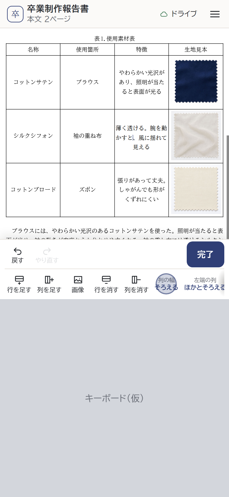
表のセルを書いているとき（仮のキーボード）


自分で決めるになると、道具の下に1段増えます（③の案C）。
いまと同じ押し方。ボタンは1つのまま。
3つになると、次に何になるか分かりにくい。中身に合わせるへ戻すには2回押す。途中の形でも、表が組み直される。

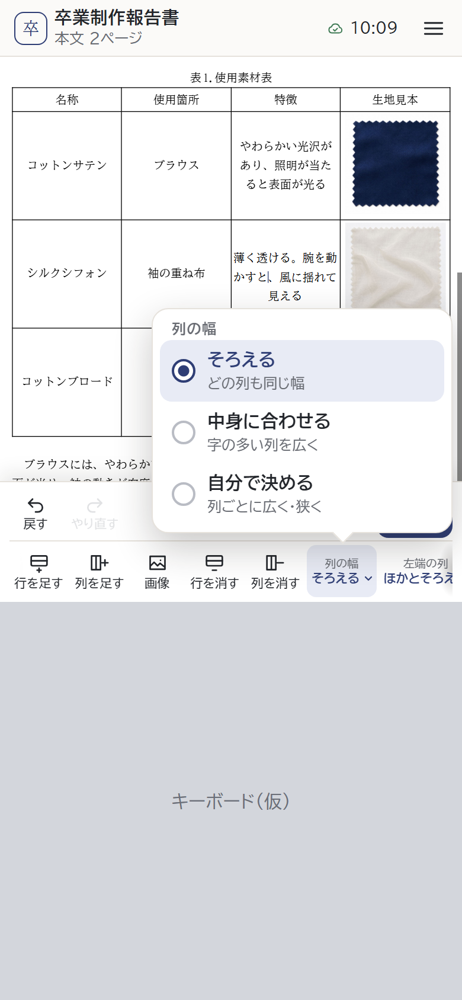
押したあと
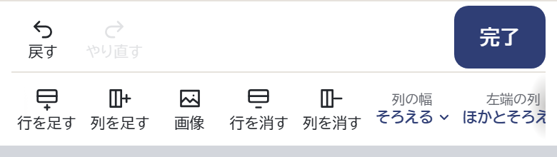
押す前：「列の幅 そろえる」に下向きの印
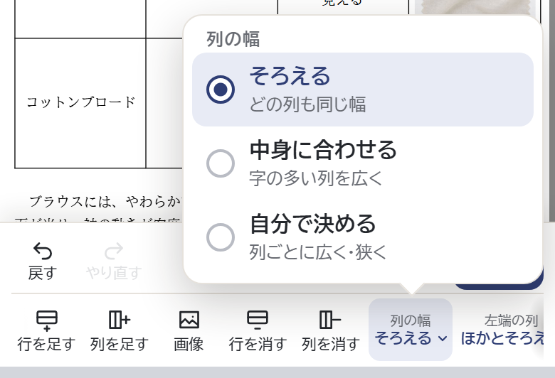
押したあと：選ぶ所は、どれも指で押しやすい高さそろえる
どの列も同じ幅
中身に合わせる
字の多い列を広く
自分で決める
列ごとに広く・狭く
「左端の列」「行の高さ」は2つだけなので、いまのまま押すたびに切り替えます。
3つを見比べて、1回で選べる。それぞれの意味も一言で分かる。
押す回数が1回増える（開く・選ぶ）。開いている間は、紙面の一部が隠れる。
② パソコン：自分で決める表の縦の線をドラッグ


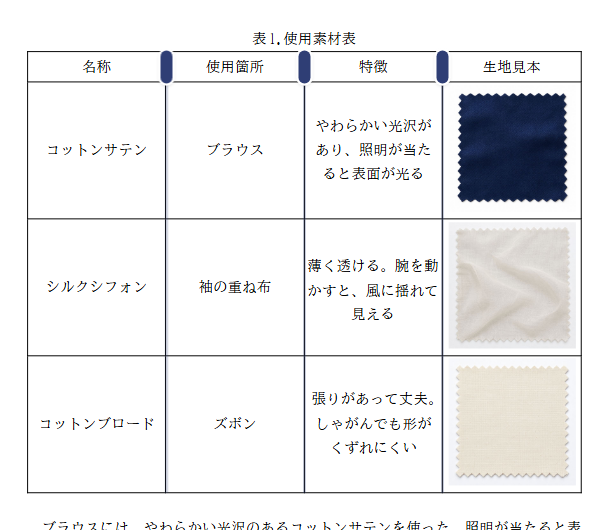
ふだん：うすい線と、細いつまみ
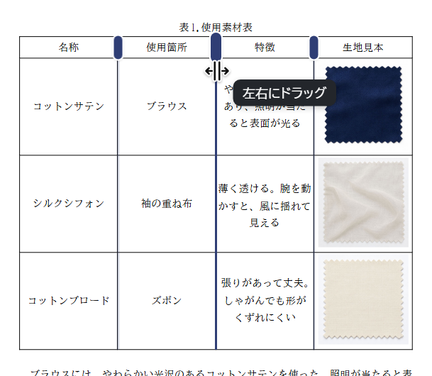
線にマウス：線が濃くなり、左右にドラッグ
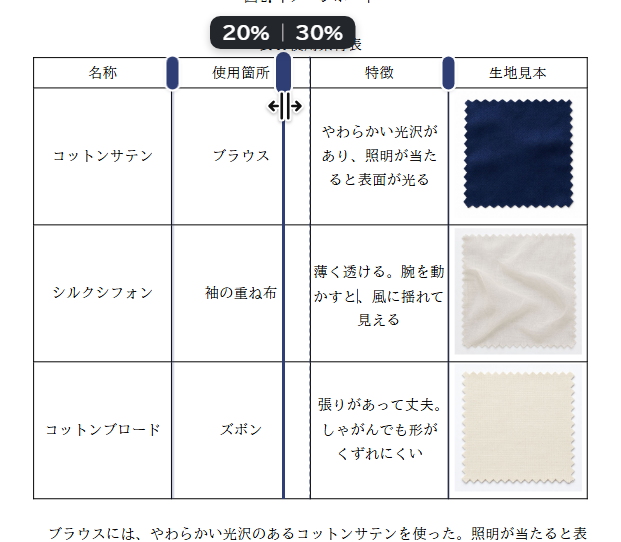
ドラッグ中：20%｜30%（線の左の列｜右の列）。点線は元の位置
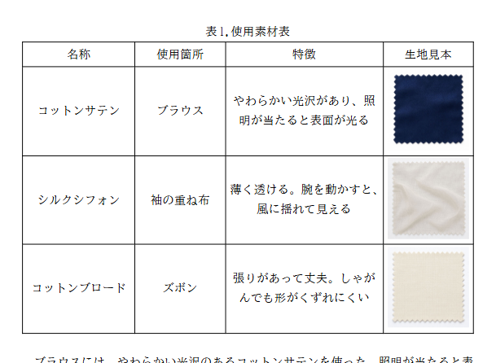
書いていないとき：ふつうの表。つまみは出ない
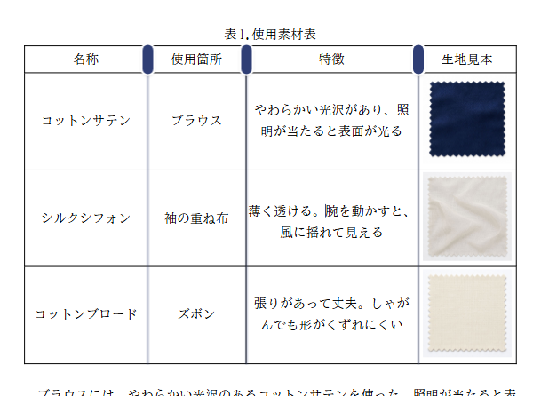
また書き始めると：つまみが出て、続けて直せる動かせるのは、となりの2列の間だけ。ほかの列の幅は変わりません。
となりの列が 10% になると、それ以上は動きません。
表を見ながら、思った所へ動かせる。書いていないときは、ふつうの表のまま。
細い線をつかむのに、少し慣れがいる。動かせるのは、表を書いている間だけ。
③ スマホ：自分で決める390×844・仮のキーボード

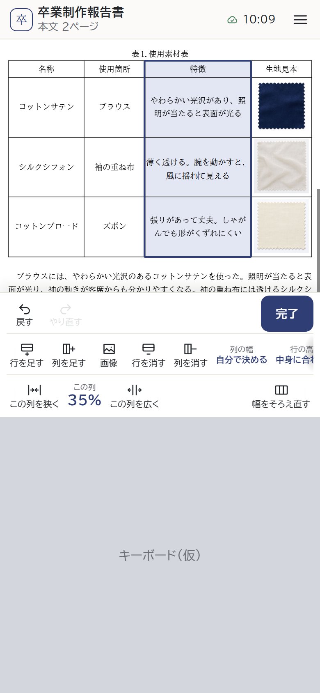
「特徴」の列のセルを書いているとき
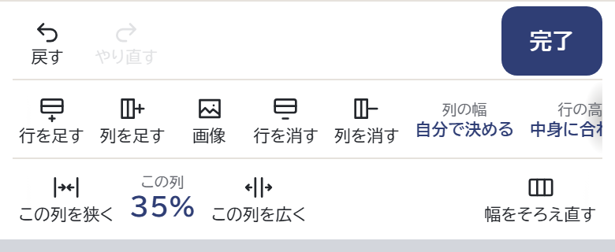
近くで：キーボードの上の道具。ボタンはどれも 44px 以上で、名前は1行この列を狭く・この列を広く
5% ずつ。広げた分は、右どなりの列が狭くなります（いちばん右の列なら左どなり）。
この列 35%
いまの幅。
幅をそろえ直す
全部の列を同じ幅に戻します（自分で決めるのまま）。
指で細い線をつかまなくてよい。押すたびに 5% ずつ、確実に変わる。
大きく変えるには、何回か押す。道具が1段増え、紙面の見える所が少し狭くなる。

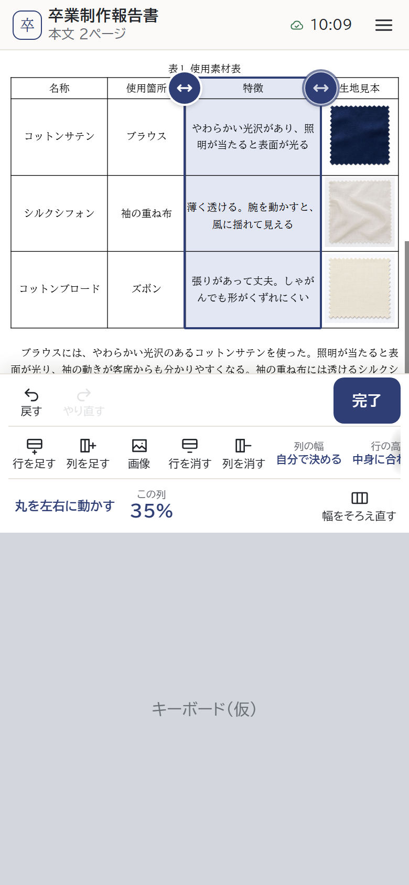
右のつまみに指を置いたところ
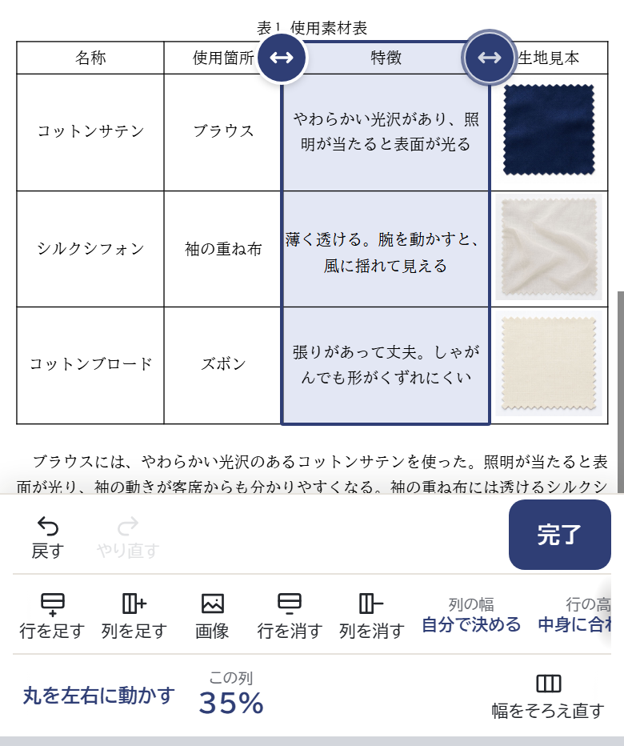
近くで：道具の下の段には、一言といまの幅、「幅をそろえ直す」丸を左右に動かす
つまみは、指で押しやすい大きさ（30px）にすると、見出しの字に重なります。
パソコンと同じ考えで、見ながら動かせる。
指でつまみと字が隠れる。列が狭いと、つまみ同士が近くて押しまちがえやすい。紙面を動かすつもりで、つまみを動かしてしまうことがある。
④ 仕上がりPDF・印刷と同じ紙面

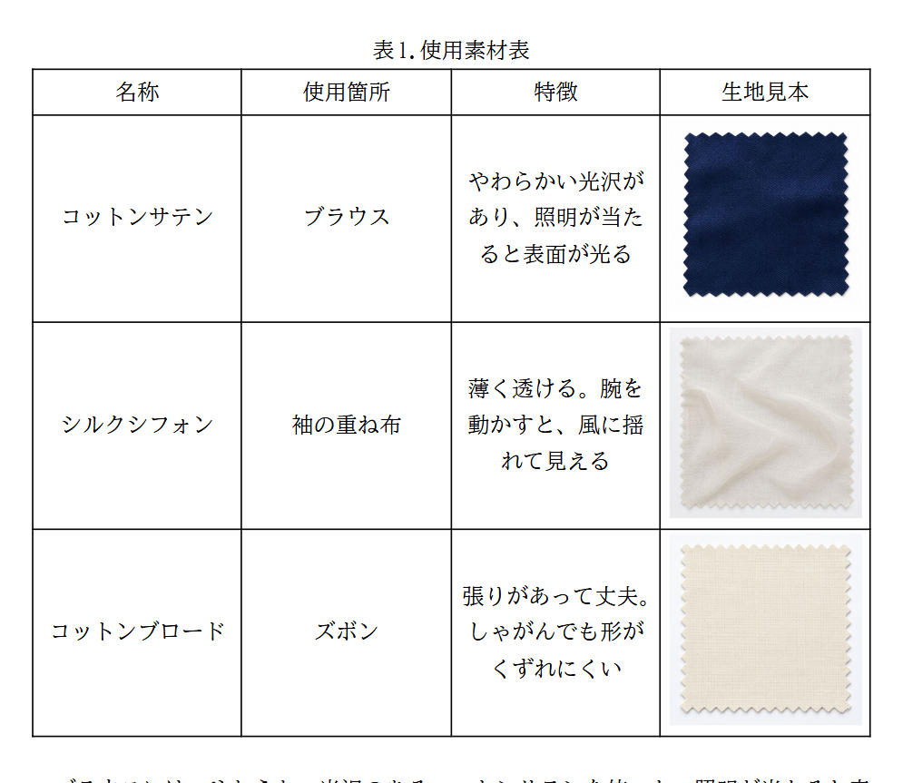
そろえる（25% ずつ）：特徴が3行になり、表が長い

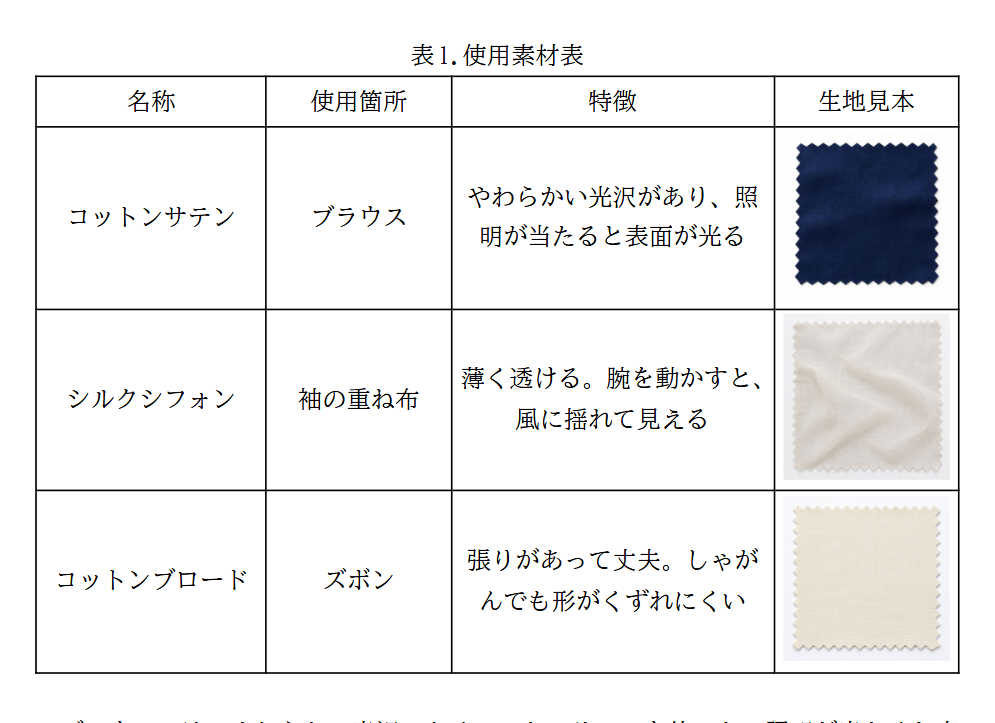
自分で決める：どの列も字がきれいに収まり、表がいちばん短い
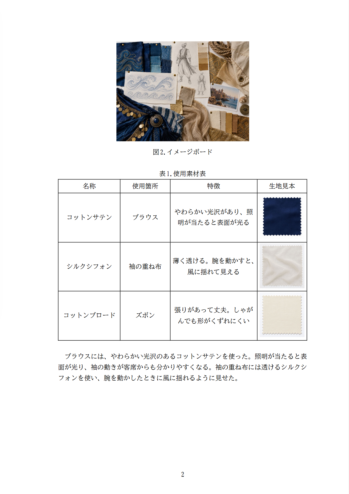
ページ全体（自分で決める）表の高さは、そろえるを 100 とすると、中身に合わせる 94・自分で決める 81（この見本）。
幅を 5% ずつにしているので、列の線の位置がそろい、手で動かしても雑に見えません。
言葉の表
| 場所 | いま | 案 |
|---|---|---|
| 列の幅（パソコン） | そろえる／中身に合わせる | そろえる／中身に合わせる／自分で決める |
| 自分で決めるのとき （パソコンの左の道具） | （なし） | 縦の線を／ドラッグして／幅を変える ［幅をそろえ直す］ |
| 線にマウス・ドラッグ中 （パソコン） | （なし） | 左右にドラッグ 20%｜30%（線の左の列｜右の列） |
| 列の幅（スマホ） | 列の幅 そろえる（押すと切り替え） | 案A：押すたびに そろえる → 中身に合わせる → 自分で決める 案B：列の幅 そろえる（下向きの印） （窓）そろえる どの列も同じ幅 中身に合わせる 字の多い列を広く 自分で決める 列ごとに広く・狭く |
| 自分で決めるのとき （スマホの道具） | （なし） | 案C：この列を狭く／この列 35%／この列を広く／幅をそろえ直す 案D：丸を左右に動かす／この列 35%／幅をそろえ直す |
- スマホの切り替えは、案A・案Bのどちらにしますか。（おすすめは案B）
- スマホで幅を変えるのは、案C・案Dのどちらにしますか。（おすすめは案C）
- スマホの「この列を広く」で狭くなるのは、右どなりの列でよいですか。（ほかに「いちばん広い列」もあります）